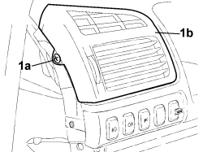

5010C14 TOP OUTLET (ONE) ON FASCIA - R+R
- Path
- Procedures > 50 AUXILIARY UNITS > 5010 CLIMATE CONTROL - MISCELLANEOUS > 5010C AIR VENTS > 5010C14 TOP OUTLET (ONE) ON FASCIA - R+R
- Kind
- repair procedure (removal / refitting; the operation number is the code)
- Applies to
- all engines; all production periods
- Interactive page
- https://sloeber94.github.io/elrnDB-fCrm/en/#/194000585
Applies to: all engines; all production periods
 Removing
Removing
 Refitting
RefittingOp. 7040A44 LEFT DASHBOARD SIDE TRIM - R.R.
1. Undo the fixing bolt (1a) and remove the upper vent (1b).

Applies to: all engines; all production periods
Applies to: all engines; all production periods
Refitting
Removing- Check that the upper vent is not damaged.
- Place the upper vent in its housing.
- Tighten the retaining bolt.
Topics linked from this page (3)
- 5580C AIR BAG SYSTEM
- 7040A44 LEFT DASHBOARD SIDE TRIM - R.R.
- 7040A45 RIGHT DASHBOARD SIDE TRIM - R.R.
Topics that link to this page (16)
- S061 DASHBOARD CREAKING
- 3330B02 PEDAL ASSEMBLY - R.R
- 3330B08 PEDAL MOUNT ASSEMBLY - R R AND OVERHAUL WITH FACIA TRIM SUPPORT BEAM REMOVED FOR RIGHT-HAND DRIVE VERSIONS
- 3330B22 BRAKE PEDAL - R+R FOR MANUAL GEARBOX VERSIONS
- 3330B26 CLUTCH PEDAL - R+R
- 3330B38 PEDAL UNIT MOUNT - R.R.
- 5040C10 AIR CONDITIONING CASING - R.R
- 5040C50 AIR CONDITIONING HEATER RADIATOR - R.R.
- 5040C64 A/C EVAPORATOR - R+R
- 5040D80 AIR CONDITIONER SYSTEM WIRING BUNDLE - R R OR REPLACE
- 5040D94 AIR CONDITIONING LEFT UPPER AIR DISTRIBUTION FLAP MOTOR (DEFROST) - R.R
- 5505C10 FRONT CROSSMEMBER WIRING - R.R
- 5505C31 BUILT-IN WIRING UNDER DASHBOARD - R.R.
- 7040A10 DASHBOARD TRIM - R+R
- 7040A97 INSTRUMENT PANEL TRIM SUPPORTING CROSSMEMBER - R.R
- 7095E22 SOUND-PROOF PANEL UNDER DASHBOARD SUPPORTING CROSSMEMBER - R.R.